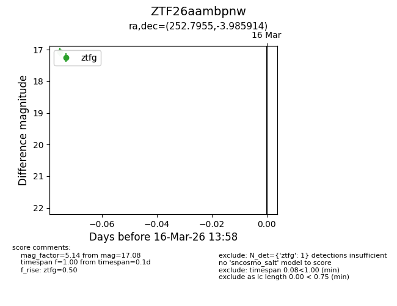
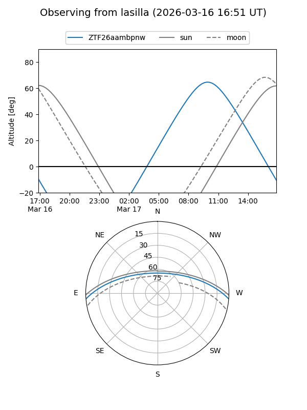
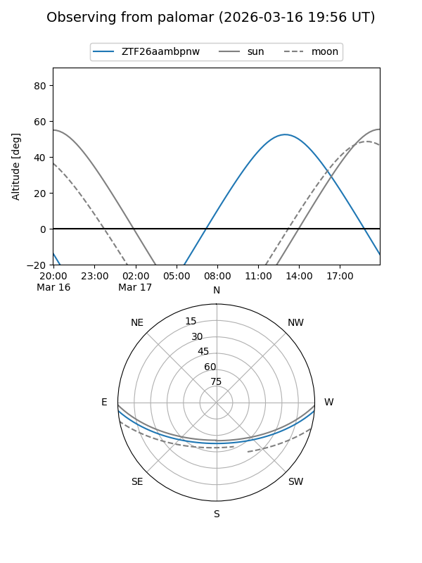

ZTF26aambpnw
Target ZTF26aambpnw at 2026-03-16 14:00
Aliases and brokers:
FINK: link
Lasair: link
ALeRCE: link
alt names
ZTF26aambpnw (ztf,fink_ztf)
Coordinates:
equatorial (ra, dec) = 252.7955,-3.98591
equatorial (HMS+DMS) = 16:51:10.91,-03:59:09.29
galactic (l, b) = (14.3804,+24.39850)
Flags:
Photometry:
last ztfg=17.08
1 ztfg detections
Lightcurve

Visibility


Additional plots